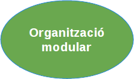
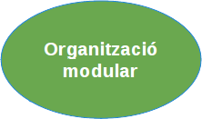

Unitat Formativa 2
Unitat Formativa 2. Programació modular


 

Aquesta és la guia de treball que conté la metodologia, els recursos, la planificació i l'avaluació de les activitats que haureu de realitzar per superar la UF2.
Recordeu que el mòdul de programació s'estructura en 3 blocs i 6 unitats formatives.
En el primer bloc (A1), vàreu aprendre els conceptes inicials de la programació, el que es correspon amb la primera unitat formativa. Això us permet codificar petits algoritmes que processin dades introduides des del teclat i fent servir les instruccions bàsiques del llenguatge JAVA aconseguir mostrar els resultats esperats per la pantalla. A mode d'esquema:
- Concepte de programa: processament algorítmic de dades a fi d'obtenir uns resultats que resolguin un problema.
- Processament algorítmic: tractament de dades controlat per estructures de processament
-
Tractament de dades:
- Declaració de variables i constants, tant de tipus bàsic (valors numèrics, lògics o de text) com de tipus compost (arrays uni i multidimensionals).
- Expressions i operacions sobre les dades
-
Estructures de processament:
- Estructures condicionals
- Estructures iteratives
En aquest bloc (A2) la complexitat dels programes s'incrementa i serà necessari que aprengueu a descompondre els algoritmes en parts més petites (mòduls i funcions), a relacionar entre sí les dades simples formant un tot coherent (estructures de dades) i a mantenir-les de forma persistent en fitxers. La descomposició d'algoritmes forma part de la unitat formativa 2, mentre que la persistència s'estudia a la unitat formativa 3.
En particular, a l'UF2 estudiareu:
- Com escriure i usar funcions. Aquí cal destacar, per la seva importància, la parametrització i l'àmbit d'ús de les variables usant funcions.
- Disseny descendent com a metodologia per descompondre procediments d'alta complexitat.
- Descomposició modular dels programes complexos aplicant el disseny descendent.
- Ús d'estructures de dades per mantenir la cohenrència de les mateixes i facilitar la programació.
- Reutilització de codi usant biblioteques pròpies i de tercers a fi de reduir la complexitat i augmentar la nostra efciencia codificant.
Metodologia
Aprendre un llenguatge de programació és una tasca complexa. Els llenguatges de programació permeten comunicar-nos amb els ordinadors, però per indicar-los què han de fer per resoldre les demandes dels usuaris. Des d'aquestes perspectives, podem dir que el seu aprenentatge comparteix trets amb el d'un segon idioma, però també amb la resolució de problemes matemàtics i d'altra índole. Així, de forma similar a com aprenem un idioma, cal practicar des del primer dia i agafar fluïdesa de mica en mica. Però també, igual com aprenem a resoldre problemes, cal copsar-ne la tipologia per saber aplicar la solució més adient.
Cal ser conscients però, que no existeixen receptes. No n'hi ha prou en saber-se de memòria les instruccions, ni tant sols la sintaxi. Cal aprendre a combinar-les correctament per resoldre el problema plantejat. Sovint no existeix només una solució, per tant, haureu d'estar atents, avaluar pros i contres i prendre decisions. La presa conscient de decisions forma també part de l'aprenentatge, malgrat impliqui que us pugueu equivocar.
La metodologia de treball aplicada a la UF2, consisteix en proposar-vos un conjunt d'activitats que us forcin a practicar i a prendre decisions. La finalitat de les activitats proposades és encaminar-vos en la realització d'un projecte que caldrà lliurar al final de la unitat formativa. En tractar-se d'un projecte de certa entitat, us resultarà imprescindible fer servir les tècniques i conceptes estudiats.
La metodologia d'aprenentatge d'aquesta unitat, deriva de corrents metodològiques centrades en el que es coneix com a "learning by doing" i més concretament en l'anomenat aprenentatge basat en projectes. El principal paradigma d'aquestes metodologies suposa que l'aprenentatge esdevé de l'activitat i de la reflexió necessària per dur-la a terme. És per això que la vostra actitud serà clau per assolir l'èxit. No n'hi ha prou en llegir el conceptes que s'exposaran durant el curs. Cal també interioritzar-los mitjançant la pràctica i la reflexió. De fet, són les activitats de reflexió, les que us donaran realment el coneixement. En general, us proposem també que compartiu les vostres reflexions amb els vostres companys ja que compartir les idees amb terceres persones us forçarà a reflexionar i us generarà una estructuració mental que us ajudarà a assolir els coneixements impartits.
Projecte i Activitats d'aprenentatge
L'aprenentatge basat en projectes és una metodologia docent que planteja a l'estudiant la realització d'un projecte semblant als que haurà de resoldre en el món laboral. Per poder realitzar el projecte, cada estudiant haurà d'adquirir el conjunt de conceptes, d'habilitats i competències específiques impartides a la UF2 d'aquest bloc (segon del mòdul 3). Es tracta d'un projecte que pretén submergir l'estudiant en una situació contextualitzada per tal que sigui necessari prendre decisions en funció del context descrit.
El projecte s'inscriu només dins l'àmbit de la UF2 (la unitat formativa 3 és independent e quant a contingut i també metodologia emprada). Així doncs, la data de lliurament final del projecte coincideix amb la data de finalització de la segona unitat formativa. Malgrat tot, donada la importància del projecte a l'avaluació, s'obrirà una període solapat amb la UF3, que s'allargarà fins el final de curs en el que podreu fer millores al vostre projecte, si així ho considereu. Es tracta d'un lliurament voluntari, pensat només per aquells que vulguin pujar nota o que necessitin més temps per a finalitzar el projecte. El lliurament de les millores, però, no eximeix la obligatorietat del lliurament del projecte en finalitzar la UF2, per poder optar al període de millores, cal fer un lliurament del que tingueu implementat del projecte al final de la UF2.
Les activitats proposades al llarg d'aquesta unitat formativa tenen com objectiu, a més de conduir el vostre assoliment de les competències específiques incloses a la UF2, facilitar-vos també, la implementació del projecte. Hem classificat les activitats en tres categories, les de seguiment, identificades per l'acrònim SG, les de projecte marcades amb l'acrònim PR i les de millora identificades amb l'acrònim MI.
Les activitats de seguiment us plantejaran lectures, reptes, discussions i problemes per tal de posar-vos en situació mental de descobrir, identificar, relacionar o assumir conceptes i procediments senzills que necessitareu aplicar tard o d'hora en l'elaboració del projecte final. Es tracta però, d'aprenentatges més o menys genèrics, aplicables a qualsevol projecte de programació de característiques similars al que haureu de resoldre. Són doncs, activitats que perduren d'un semestre a l'altre, amb poques variacions, de d'una importància cabdal perquè aporten la base a partir de la qual construireu la resta de l'aprenentatge.
Les activitats de tipus PR varien sempre d'un semestre a l'altre perquè s'adapten de forma específica al projecte concret que haureu de resoldre. Les primeres activitats d'aquest tipus, us demanaran d'implementar funcions que posteriorment podreu usar en la implementació final del projecte. Poc a poc les activitat de tipus PR us plantejaran escenaris per concretar la descomposició del projecte en mòduls, funcions i estructures de dades. Les darreres activitats us permetran implementar tot el projecte.
La tipologia MI (millora) queda restringida a una única activitat a realitzar, com ja s'ha indicat, de forma totalment voluntària durant el període de millora, el qual coincideix amb el període durant el qual s'impartirà la UF3.
El projecte es realitzarà a títol individual. Qualsevol constatació de projectes copiats i/o excessivament semblants, seran penalitzats en proporció a la gravetat del fet. Això però, no entra en contradicció amb la demanda explicita de col·laboració que se us fa en les diferents activitats. És tracta d'intervencions al fòrum, resolució comuna de problemes específics, o debats dirigits.
Els fòrums i debats, són espais de discussió i intercanvi que us ajudaran a comparar i contrastar les vostres conclusions amb les dels vostres companys, podreu també recollir idees o plantejar les pròpies. No us faci por intervenir, ni menystingueu l'aprenentatge que se'n deriva d'aquestes activitats. Tingueu en compte que en darrer terme, el professor de l'aula està atent a les vostres intervencions i si detecta que en alguna ocasió s'està arribant a alguna conclusió errònia, donarà les indicacions pertinents per corregir la situació i redreçar el debat.
Temps de dedicació
Sabem que la constància és un element clau de l'aprenentatge, per això, hem incrementat el nombre de lliuraments. Això no significa que s'hagi incrementat la feina a realitzar, sinó que aquesta es troba distribuïda de diferent manera. Per tal d'uniformitzar els lliuraments, les activitats s'han agrupat en períodes amb una càrrega de feina similar per cada un ells.
Aproximadament cada període representa entre 10 i 15 hores de feina. Cal remarcar aferrissadament el terme aproximat, ja que cada un de vosaltres hi haureu de dedicar més o menys hores en funció dels interessos, de les habilitats i dels coneixements previs que disposeu. No existeix una fórmula màgica que determini la dedicació, però heu de tenir en compte que la programació no es pot estudiar de memòria, sinó que requereix, entre d'altres, relacionar múltiples conceptes o identificar situacions complexes. Això afegeix un grau de dificultat extra, que sovint cal superar incrementant les hores de dedicació.
Al final de cada període s'ha previst un lliurament que doni compte de la vostra participació i la feina realitzada. A excepció del darrer període, la resta contemplen, per cada lliurament, una data recomanada i una data límit. És molt important que intenteu seguir les activitats cenyint-vos a les dates recomanades, només així us assegurareu d'acabar a temps el projecte. Malgrat tot, com a mesura de flexibilitat, les bústies de lliurament restaran sempre obertes fins la data límit. No podreu fer lliuraments més enllà de la data límit, per tant, us aconsellem que si en algun moment necessiteu fer un lliurament passada la data recomanada, intenteu recuperar el ritme en el següent període, de forma que sempre us quedi un finestra de temps (entre la data recomenada i la límit) per esmorteir qualsevol altre entrebanc. Si no recupereu i treballeu sempre al límit, qualsevol entrebanc us podria jugar una mala passada i impedir algun dels lliuraments.
Respecte les dates recomanades i límit, cal remarcar encara una cosa més. Fixeu-vos en la taula de planificació, que entre la data recomenada i la límit es van escursant els dies que hi ha entre elles, a mida que ens acostem al període final. Això és així perquè a mida que s'acosta el final de la UF2, hi ha menys dies disponibles i per tant cal reduir també la diatància entre la data recomanada i la límit a fi d'assegurar que tothom acabi lliurant el projecte just abans d'acabar la UF2.
L'avaluació
El seguiment de l'avaluació contínua (AC) és obligatòria per la UF2. Això significa que si no feu els lliuraments mínims indicats més abaix, no podreu presentar-vos a la prova final d'avaluació (PAF) i la unitat formativa us quedarà suspesa. D'altra banda, el pes d'aquesta AC suposa el de la qualificació final. L'altre correspondrà a la qualificació obtinguda a les proves d'avaluació final.
Les raons que ens porten a ponderar d'aquesta manera la l'AC són, d'una banda el reconeixement de la feina que feu l'aula i de l'altra, la dificultat de valorar els vostres coneixements amb només un examen de poc més d'una hora. Gràcies al seguiment continu de la vostra activitat, podem donar un pes important a l'AC, tot i mantenir la PAF.
Prova final d'avaluació (PAF)
Al final del semestre, el professor us farà arribar uns consells i unes indicacions del tipus de preguntes que tindrà la prova. Malgrat tot, heu de tenir en compte, que les preguntes pretenen d'una banda validar l'autoria dels vostres lliuraments, també es valora la qualitat de l'aprenentatge i per últim permet establir un filtre de mínims a partir del qual es considera que la qualitat de l'aprenentatge ha estat insuficient. En aquest sentit, només es ponderarà la de la PAF i de l'AC si la nota de la prova final és superior a ERROR 3. Qualsevol altre cas implicarà suspendre la UF2.
Avaluació contínua (AC)
Totes les activitats que se us proposen de fer en aquesta guia, formen part del que anomenem l'avaluació contínua (AC). Això significa que totes elles ponderen, en major o menor mesura, en la qualificació d'aquesta. Tingueu en compte però, que per poder obtenir una nota d'AC serà imprescindible lliurar al menys el ERROR de les activitats proposades. Una taxa de lliurament inferior suposarà que no us podreu presentar a les proves finals i per tant implicarà el suspens de la unitat formativa.
En relació a la qualificació, hem classificat les activitats com a no qualificables (NQ) o qualificables (Q) (consulteu taula d'activitats a la secció de planificació). Les activitats NQ no es qualifiquen en funció de les respostes que lliureu, però es tenen en compte per calcular la nota de seguiment de l'avaluació contínua (SAC). La nota de seguiment es calcula usant la fórmula següent:
| SAC = | ERROR |
La fórmula no és aplicable si el percentatge de lliuraments (qualificables i no qualificables) es troben per sota del ERROR. La fórmula bonifica els estudiants que facin un major nombre de lliuraments. De fet estableix una proporcionalitat de zero a deu entre el mínim de lliuraments (ERROR) possibles i el màxim (100%).
Les activitats Q, a més de contribuir al valor del SAC, es qualifiquen en funció de les respostes lliurades. Cada activitat pot tenir un nombre variable d'exercicis que haureu de contestar i lliurar a la bústia corresponent. Si no s'especifica el contrari, tots els exercicis d'una mateixa activitat tenen la mateixa ponderació. Com veureu a la taula d'activitats de la secció de planificació, només activitats són de tipus Q: .
La qualificació d'aquestes activitats donarà lloc a la nota d'activitats de l'avaluació contínua (AAC), la qual pondera de la següent manera:
| AAC = | ERROR |
Ambdós valors (SAC i AAC) contribuiran al valor de la nota d'AC en un ERROR el primer i un ERROR el segon.
Fórmules AC i UF2
A mode de resum direm que la fórmula de l'AC és:
| AC = | 0 si el nombre de lliuraments és inferior al ERROR de les activitats proposades. |
| ERROR SAC + ERROR AAC |
I la nota final de la UF2:
| UF2 = | 0 si el nombre de lliuraments de l'AC és inferior al ERROR de les activitats proposades. |
| PAF si la qualificació de la PAF no arriba a ERROR | |
| ERROR AC + ERROR (PAF) |
Cal indicar, que malgrat les activitats NQ no es qualifiquen, se un demanarà que ompliu i lliureu un petit informe de l'activitat. L'objectiu d'això, respon, d'una banda, a constatar que heu realitzat l'activitat i de l'altra, informar al professor de com evoluciona el vostre aprenentatge. És important que ompliu l'informe amb la màxima sinceritat, ja que això ajudarà al professor a copsar si el ritme d'aprenentatge és adequat o bé presenta algun dificultat. En el darrer cas, el professor us podrà aconsellar com superar les dificultats i aconseguir l'objectiu final.
Recordeu que les activitats NQ no es qualifiquen. És dir, en relació a la nota, aportareu exactament el mateix tant si indiqueu que heu pogut fer les activitats sense cap dificultat com si n'especifiqueu alguna.
La planificació
Visió general
A continuació trobareu la taula de planificació de les activitats de la UF2 (calendari). Veureu que es troba organitzat per períodes. Allà trobareu les dates d'inici i finalització, un enllaç a les instruccions de cada activitat, així com les dates de lliurament o d'altra informació que us pot resultar útil: on cal fer el lliurament, si l'activitat és o no qualificable, el tipus d'agrupació necessari per fer l'activitat o bé si es tracta d'una activitat de seguiment o projecte.
Cada període contempla dues dates de lliurament, la data recomanada i la data límit. És molt important que intenteu seguir les activitats cenyint-vos a les dates recomanades, només així us assegurareu d'acabar a temps el projecte. Malgrat tot, com a mesura de flexibilitat, les bústies de lliurament restaran sempre obertes fins la data límit. No podreu fer lliuraments més enllà de la data límit, per tant,us aconsellem que si en algun moment necessiteu fer un lliurament passada la data recomanada, intenteu recuperar el ritme en el següent període o si més tant tant aviat com us sigui possible.
En referència a l'agrupació, malgrat que totes les activitats les heu de fer individualment, algunes d'elles requereixen a més, la participació en fòrums de discussió general o de grups reduïts. Cal aclarir que els grups reduïts estan pensats per facilitar la intervenció de tots els participants, evitant però, fils de discussió excessivament llargs i de difícil lectura. Per poder veure els fòrums de col·laboració reduïda haureu de triar un dels fòrums disponibles fent servir l'eina tria grup de col·laboració (TGC). D'altre manera us serà impossible veure ni participar d'aquests fòrums.
És molt important que tingueu present en tot moment la planificació descrita al calendari ja que us permetrà comprovar en tot moment les tasques a realitzar o si us heu descuidat de lliurar-ne alguna.
La planificació
Taula d'activitats
Període |
Dates | Activitat |
Nom | Lliurament1 |
Data fi. recomanada | Data límit lliurament | Avaluació2 |
Agrupació3 |
Categoria4 |
|---|---|---|---|---|---|---|---|---|---|
| del al | |||||||||
| del al | |||||||||
| del al | |||||||||
| del al | |||||||||
| del al | |||||||||
| del al | |||||||||
| del al | |||||||||
| del al | |||||||||
| del al |
Notes
| 1 | B: bústia de lliuraments múltiples, FD: fòrum de discussió d'activitats proposades. TG: Aplicatiu per triar grup. En cas que el lliurament contempli dos o més sistemes, cal realitzar tots els lliuraments per comptabilitzar el seguiment. |
| 2 | NQ: L'activitat no es qualifica però és necessària per obtenir els punts de seguiment, Q: l'activitat es qualifica, , V: Voluntaria, és optativa i permet pujar la nota de l'AC. |
| 3 | I: Individual, GG: Grup gran, GR: Grup reduït de col·laboració. |
| 4 | SG: Activitat de seguiment, PR: Activitat de projecte, MI: Activitat de millora. |
Abans de continuar
Aquesta secció us ajudarà a treure el màxim de rendiment de les guies i instruccions de les activitats. Se us donaran consells de navegació, se us explicarà com interaccionar amb els recursos que contenen, s'indicarà on es troben la informació rellevant, etc. Aquesta secció s'ha estructurat en 4 apartats: la nevegació, les animacions, els recursos d'ajut en alguns exercicis (pistes, consells i solució) i el menú informatiu. Podeu arribar-hi navegant seqüencialment o bé accedit-hi directament des del següent índex:
- Com navegar pel contingut de les guies i instruccions de les activitats.
- Com interaccionar amb les animacions complementàries que existeixen en alguns apartats.
- Obtenció de la solució, de pistes o de consells per poder resoldre els exercicis plantejats.
- El menú d'informació addicional.
Format
Actualment el format en que trobeu totes les guies de les activitats és només HTML. No existeix versió en PDF tot i que la versió HTML és responsive i per tant es pot llegir perfectament en tablets i dispositius mòbils.
Abans de continuar
Navegació
Per avançar de pàgina en pàgina, endavant i enrere, disposeu de les fletxes de navegació (vegeu figura). Són útils per a fer un recorregut seqüencial.
Disposeu també del menú de seccions (vegeu figura) per desplaçar-vos directament a l'inici d'una de les secció de l'activitat. No totes les activitats disposen exactament de les mateixes seccions, malgrat tot cal destacar les seccions comunes inic, què cal fer, lliurament o com continuar. La secció inici us introduirà l'activitat i destacarà allò que sigui més important. A la secció què cal fer se us detallarà tot el que heu de fer, exercicis, debats, etc. No totes les activitats que realitzeu s'ha de lliurar, sovint a les activitats NQ els lliurament són només un informe on se us demana un conclusió, un resum, el grau de dificultat que heu trobat en un exercici, etc. Per tant, a més de realitzar el que es descriu a la secció què cal fer, haureu de consultar també la secció lliurament. Allà se us indicarà com podeu aconseguir l'informe de lliurament i a quina bústia. En canvi, a les activitats Q, no es lliura informe sinó la vostra solució als exercicis i preguntes que se us plantegi, així com el projecte implementat al final de la UF2. a la secció de lliurament se us indicarà el format esperat i la bústia on cal fer el lliurament. Finalment destacarem també la secció com continuar on com a mínim hi trobareu un enllaç a la següent activitat per tal que pugueu avançar sense haver de desplaçar-vos al campus o a la taula d'activitats.
Tot i així tingueu en compte que des del campus o des de la taula d'activitats d'aquesta guia, podeu traslladar-vos directament a qualsevol altra activitat
Abans de continuar
Animacions
Algunes activitats disposen d'animacions, com a recurs didàctic. Es tracta de recursos que presenten informació que canvia automàticament cada cert temps. En genral es tracta d'informació redundant extreta del contingut de la mateixa pàgina o es troba ubicat el recurs. La principal missió del recurs és la de captar l'atenció sobre aspectes importants del text, esquematitzar idees, etc.
Es possible fer avançar les diferents vistes de l'animació sense haver d'esperar que transcorri el temps predeterminat, arrossegant la vista actual cap a la dreta o cap a l'esquerra amb el punter del ratolí ratolí (figura). Si arrosseguem cap a l'esquerra passem a la següent vista. Si ho fem cap a la dreta, passarem a l'anterior.
Si per contra el que desitgeu és retenir la vista actual sense que es produeixi el desplaçament automàtic a la següent vista, n'hi ha prou amb situar el ratolí damunt la vista i mantenir-lo allà fins que es desitgi passar a la següent. Quan l'animació detecta el ratolí damunt la vista atura el temporitzador fins que retirem el ratolí (figura).
Abans de continuar
Exercicis amb pistes, consells o solució
A la secció de què cal fer, alguns dels exercicis disposen de botons específics per obtenir consells útils per a la realització de l'exercici concret o bé diverses pistes que us encaminaran a trobar la solució (si es tracta d'un exercici) o a centrar el debat (si es tracta d'una discussió al fòrum). Per visualitzar una de les pistes caldrà clicar al seu botó corresponent. Si voleu tornar a l'exercici caldrà clicar per segona vegada el mateix botó. Tot i així podeu saltar d'una pista a l'altre clicant els diferents botons, sense necessitat de tornar a l'exercici.
Malgrat que un exercici tingui pistes, no les activeu sense abans haver reflexionat mínimament sobre el que se us està demanant. Les pistes haurien de ser sempre el darrer recurs. També és aconsellable que un cop destapeu una pista, reflexioneu sobre ella abans de destapar-ne una altra. Per descomptat, les pistes estan per a ser consultades, però si abans heu fet un mínim esforç mental per elucubrar la solució, la pista obtinguda tindrà un efecte multiplicador.
Els consells a diferencia de les pistes disposen d'un control per tancar la finestra que conté la informació fent servir el ratolí. Els consells no són pistes sobre la solució, sinó més aviat recomanacions generals que us poden anar bé en el context de l'exercici a resoldre.
Les solucions, només es presenten en activitats de tipus SG (de seguiment), no pas a les PR (de projecte). Obtenir la solució als exercicis plantejats us servix per comparar la vostra solució amb la oficial. Per tant, intenteu no clicar la solució abans d'haver fet la vostra. Per descomptat, si després d'haver consultat totes les pistes i d'haver reflexionat prou estona, us trobeu en un camí sense sortida, abans de quedar-vos estancats, cliqueu la solució i comenceu de nou la reflexió amb la solució en ment.
A l'hora de comparar la solució, cal que tingueu present que en la majoria d'exercicis, no existeix una única solució i per tant la comparació hauria de ser també reflexiva. Quines són les diferències, quina és més clara, quina més fàcil de modificar, quina és més eficient, etc.
Les activitats de projecte que tinguin solució oficial, no presentaran mai el botó solució, ja que la solució es penjarà sempre en el campus el dia que correspongui.
Abans de continuar
Informació addicional
En totes les activitats, disposareu sempre d'un botó(figura) que us permetrà accedir al menú d'informació addicional de l'activitat. El menú es desplega clicant el botó i es replega tornant-lo a clicar.
En el menú podeu trobar-hi informació addicional com ara els objectius didàctics associats a l'activitat, l'enunciat del projecte, llocs i materials per a reforçar els coneixements treballats o per ampliar-los (figura).
Els objectius us informen del que haureu d'aconseguir aprendre en l'activitat i per tant faciliten que us centreu en l'essencial. L'enunciat del projecte us donarà una visió contextualitzada del que aneu aprenent en el sentit de evidenciar la seva aplicació en un problema real. Els materials de reforç, en moments puntuals, poden servir de catalitzadors per assimilar el conceptes o procediments nous, tot i que no podeu centrar permanentment l'estratègia d'aprenentatge en el reforç. Si això passa consulteu al professor, probablement es tractarà d'algun aspecte mal après que el professor us pot ajudar a resoldre.
Com continuar
Com treballar
Ha arribat l'hora de començar. Si després d'haver llegit la guia us queda algun dubte, escriviu al fòrum general de l'aula o al correu del professor.
Us aconsellem que comenceu a treballar des del primer dia i que sigueu constants en la vostra feina, per això us recomanem que us feu un calendari personalitzat en el que distribuïu el més equitativament possible (una estona diària seria l'ideal) les hores de dedicació setmanals. Tingueu ben presents les dates de lliurament en elaborar el calendari. Visiteu periòdicament l'aula del campus i presteu especial atenció al tauler del professor. Seguiu les indicacions de les activitats i participeu en els debats i fòrums. Si teniu qualsevol dubte feu servir el fòrum general de l'aula o el del període i el dubte fa referència a alguna de les activitats proposades.
Podeu accedir a la primera activitat per la que cal començar, clicant aquí, tot i que com ja s'ha comentat, des de la taula d'activitats podeu accedir a qualsevol d'elles, en un sol clic.